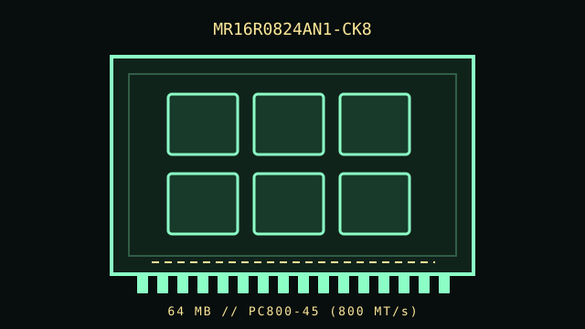

[ RAMBUS RIMM MODULES // IDENTIFIED COMPONENT ]
Samsung MR16R0824AN1-CK8
A distinct Samsung RDRAM RIMM module SKU. Specifications below identify the marked product and keep its transfer class, module revision, and host restrictions separate from similarly sized Rambus parts.

IDENTIFICATION: Confirm the complete label and SPD against the exact module sheet. Similar Samsung RIMM names can indicate different capacities, speed grades, ECC widths or revisions.
Recorded specifications
| Manufacturer / exact part number | Samsung MR16R0824AN1-CK8 |
|---|---|
| Capacity | 64 MB |
| Memory interface / form factor | Rambus DRAM (RDRAM), 184-contact RIMM module; not a DDR DIMM or SODIMM |
| Transfer-rate / speed grade | PC800-45 (800 MT/s) |
| Latency | 45 ns module access class |
| Nominal module supply | 2.5 V RDRAM module class; check Samsung module sheet and host rail tolerance for this exact revision |
| Data width / error checking | Non-ECC, 16-bit data path |
| Channel topology | 16-bit Rambus channel for non-ECC variants; ECC module uses a wider check-bit path. RIMMs form a continuous channel rather than independent parallel DIMM drops. |
| Termination / continuity | Use passive C-RIMMs in positions not occupied by memory modules when required by the board topology; a C-RIMM bridges channel continuity and has no usable memory capacity. Channel termination is determined by the host design, not by treating a C-RIMM as a terminator. |
| Platform compatibility | Candidate platform class: RDRAM-equipped systems whose controller, BIOS, module voltage, capacity and timing explicitly support this Samsung SKU. Intel 850 platforms are generally PC600/PC800-era; Intel 850E supports PC800/PC1066 operation as specified by the board vendor. ECC models additionally require ECC-capable controller/firmware. This is a chipset-era reference only, not a blanket compatibility guarantee. |
| Revision / identification | Read the full label including MR16R0824AN1-CK8, SPD data, PCB revision and date code. Capacity and nominal PC rating alone do not establish electrical, ECC, timing, or BIOS compatibility. |
Topology and installation
Install matched RIMMs in the channel positions prescribed by the host manual. Intel 850-era dual-channel boards commonly require matched pairs; an empty RIMM position in a channel must use the supplied passive continuity RIMM (C-RIMM), not remain open. Follow the exact board manual because slot population order and permitted mixtures vary.
Do not mix module speed grades or ECC/non-ECC module types unless the specific chipset and board manual explicitly lists that combination. Install with even pressure, align the offset key, and de-energize the system before handling. C-RIMMs are continuity pieces, not spare memory sticks.
SKU-specific notes
Samsung’s CK8 grade is the PC800-45 variant. Preserve the complete AN1 suffix: closely named modules may differ in density or revision.
Candidate platform class: RDRAM-equipped systems whose controller, BIOS, module voltage, capacity and timing explicitly support this Samsung SKU. Intel 850 platforms are generally PC600/PC800-era; Intel 850E supports PC800/PC1066 operation as specified by the board vendor. ECC models additionally require ECC-capable controller/firmware. This is a chipset-era reference only, not a blanket compatibility guarantee.
Sources & further reading
- Samsung MR16R0824AN1-CK8 module datasheet (archived)Model-specific Samsung datasheet or archived technical record; use it to verify the exact suffix, module organization, voltage and timing.
- IT Creations listing for Samsung 64 MB PC800-45 RIMM, SKU MR16R0824AN1-CK8Independent archival/catalog identity reference for the specific marketed module and capacity.
- Intel Pentium 4 / Intel 850 chipset platform design guide (official PDF)Platform-level installation and RIMM population guidance; the host board manual controls the final slot/C-RIMM arrangement.
- Rambus RDRAM memory architectureRambus overview of the RDRAM channel architecture; not a compatibility list for this specific board.
Archived seller listings establish historical SKU identity, not present-day support or guaranteed authenticity. For service, use the exact computer/motherboard manual and current physical label/SPD.